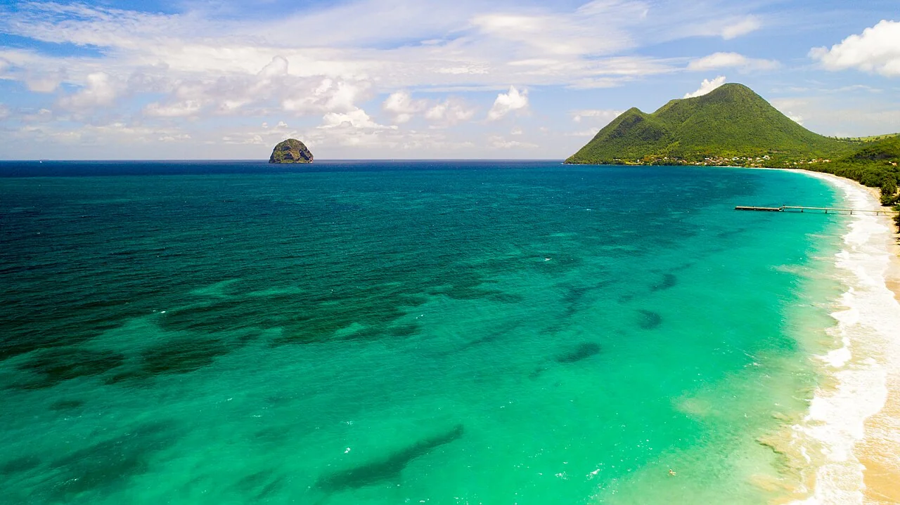

Rocher du Diamant — Le Diamant
Le Diamant, Martinique · plongée

Îlot inhabité de 175 m de haut, à environ 2 km de la côte, face à la commune du Diamant. Selon Figaro Nautisme, c’est l’un des sites de plongée emblématiques de la Martinique : tombants, platier, arche et faille sous-marine, éponges, gorgones, coraux, et des tortues régulièrement. Les plongées se font dans une vingtaine de mètres, mais les parois descendent bien plus bas, jusqu’à 40 m, voire 60 m. La saison sèche court de décembre à mai environ, avec une mer calme côté Caraïbes.
- Lieu
- Le Diamant, Martinique
- Niveau
- Variable selon les conditions
- Activités
- plongée
- Type d'eau
- Mer / océan
- Coordonnées
- 14.44, -61.04 (position approximative du secteur)
Dangers à connaître
- Le rocher est soumis aux courants.
- Débarquement et mouillage interdits en dehors des bouées réservées.
- Les parois plongent jusqu’à 40 m, voire 60 m selon la face : reste dans les limites de ta certification.
Le conseil d'Ocean Buddy
Renseigne-toi sur le courant avant la sortie et choisis une plongée adaptée à ton brevet.
Ouvrir dans Ocean Buddy Télécharger sur l'App Store
Source : Fiche Ocean Buddy · décembre 2026 · d’après Figaro Nautisme, Wikipédia et Martinique Tourisme · à vérifier localement.